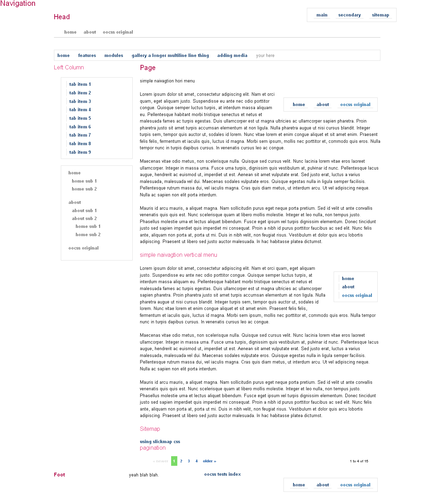

Object Oriented CSS Framework
Authors
majic3 (info@majic3.com)
Martin Klepsch (martinklepsch@gmail.com)
Stubbornella (nicole@stubbornella.org)
Contact
majic3 (info@majic3.com)
Download
You can download this project in either zip or tar formats.
You can also clone the project with Git by running:
$ git clone git://github.com/majic3/oocss
